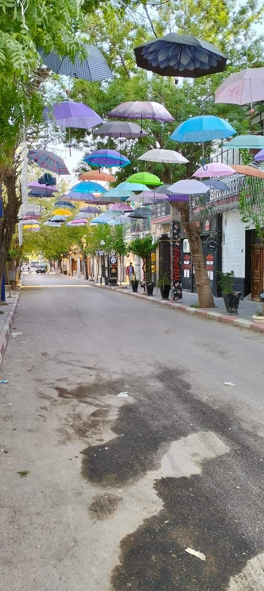
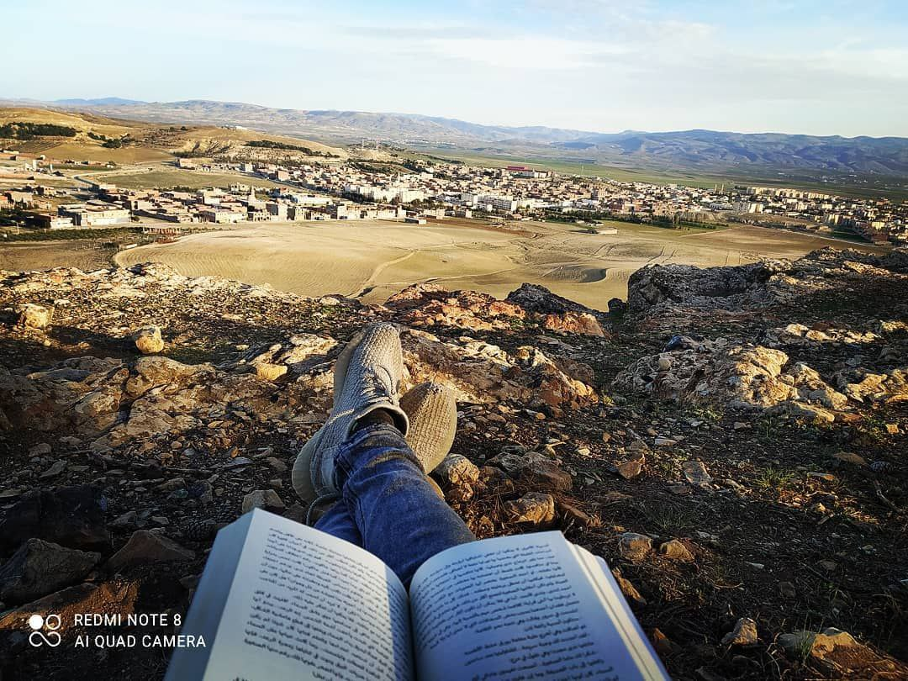

L'Algérie est un vaste pays d'Afrique du Nord qui s'étend de la côte méditerranéenne
jusqu'au cœur du Sahara, lequel couvre plus des quatre cinquièmes de son territoire. Façonnée
par diverses civilisations au fil des millénaires, elle mêle un
héritage arabe, berbère et islamique à de fortes influences méditerranéennes et sahariennes.

Bordj Bou Arreridj Ville algérienne située à environ 215 kilomètres au sud-est d'Alger.
Capitale de la steppe, mélange de modernité et de traditions. Connue sous le nom d'El Bordj.

El Anseur est une ville et une commune de la wilaya de Bordj Bou Arréridj, en Algérie. Selon le recensement de 1998, elle compte 11 170 habitants.